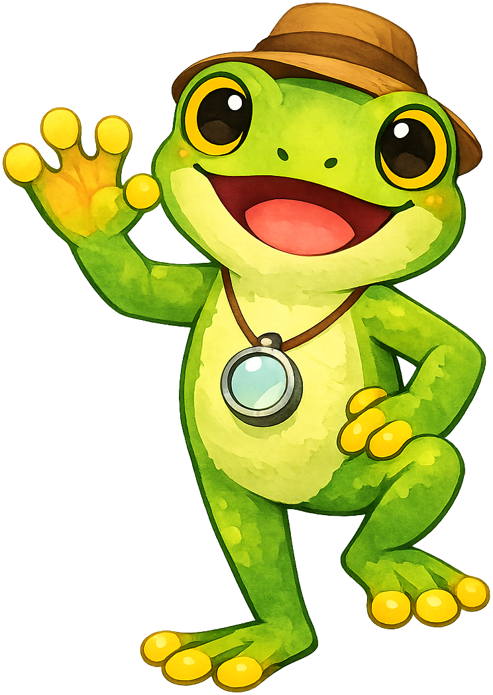
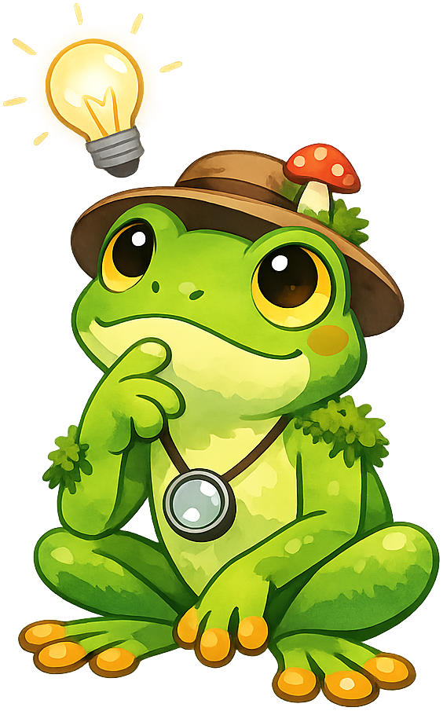
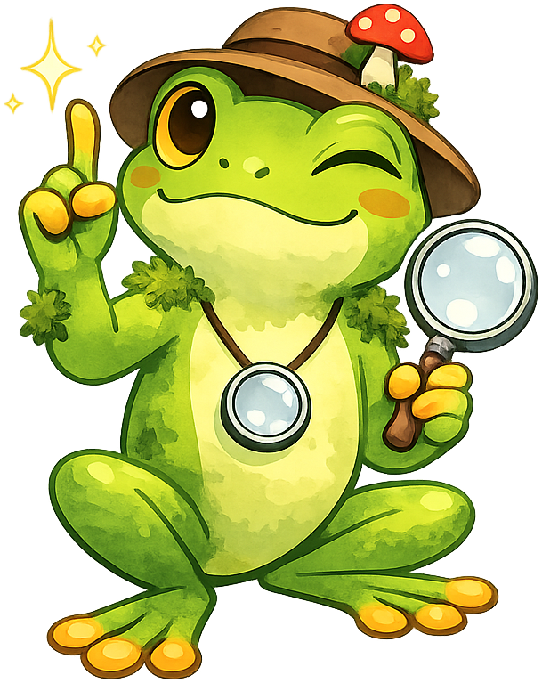
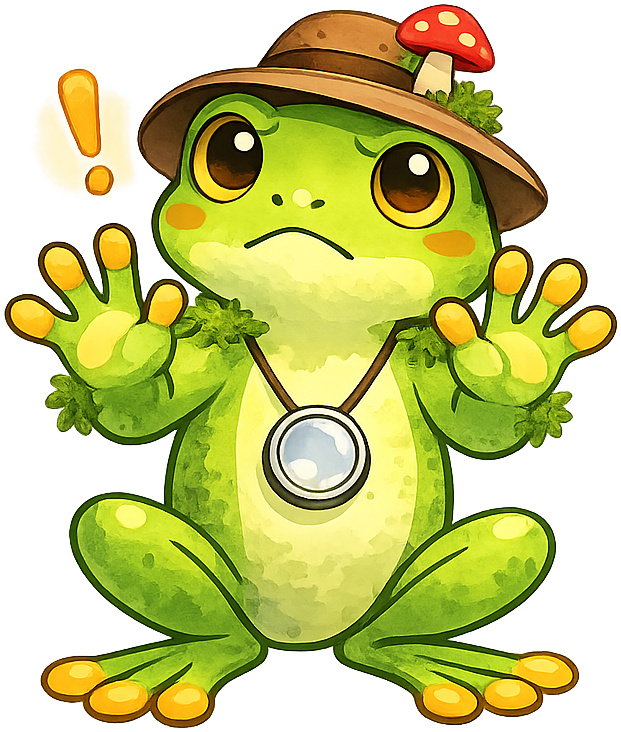
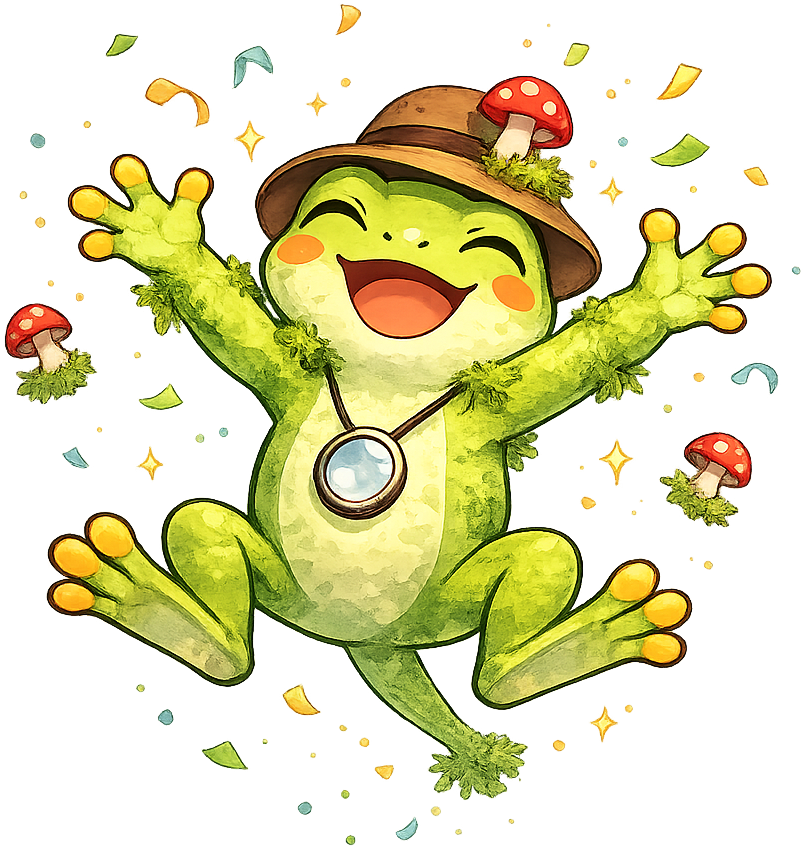

Chapter 16: Moss in Education and Across Life Stages
Summary
This chapter examines how moss is used as a teaching tool and therapeutic resource across different populations. Students explore K-12 education applications, STEM integration, hands-on labs, nature walks, and microscope activities. The chapter also covers moss in senior living, therapeutic and memory care gardens, horticultural therapy, accessibility design, and intergenerational and community projects.
Concepts Covered
This chapter covers the following 20 concepts from the learning graph:
- Moss in K-12 Education
- Hands-On Moss Labs
- Outdoor Exploration
- Simple Experiments
- Moss STEM Integration
- Biology Lesson Plans
- Systems Thinking Labs
- Microscope Activities
- Moss Journaling
- Nature Walk Curriculum
- Moss in Senior Living
- Therapeutic Gardens
- Low-Maintenance Greenery
- Sensory Engagement
- Horticultural Therapy
- Memory Care Gardens
- Accessibility Design
- Intergenerational Projects
- Community Moss Gardens
- Citizen Science
Prerequisites
This chapter builds on concepts from:
Mossby Says: Let's Hop To It!

{kind=link}
Moss is more than a subject to study. It is a living teaching tool that fits in the palm of a hand, grows without soil, and asks almost nothing in return. These qualities make it an ideal organism for classrooms, therapy programs, senior communities, and neighborhood projects alike.
In this chapter, we explore two broad themes. First, we look at how moss enriches education from elementary school through high school, connecting to science standards in biology, ecology, and systems thinking. Second, we examine how moss improves quality of life for older adults, people in therapeutic settings, and entire communities. Along the way, you will find concrete lesson plans, lab protocols, garden designs, and project ideas you can adapt to your own context.
Part 1: Moss in Education
Moss in K-12 Education
Moss is one of the most accessible organisms for classroom study. It requires no special growing equipment, no hazardous chemicals, and no expensive supplies. A teacher can collect a small patch of moss from a schoolyard, place it in a clear container with a damp paper towel, and have a living specimen ready for observation within minutes.
At the elementary level (grades K-5), moss introduces young students to foundational ideas: living versus non-living things, plant needs (light, water, air), and simple observation skills. Children are naturally drawn to moss because it is soft, green, and responds visibly to water — a dry, crinkled cushion springs back to life with a few drops from a spray bottle.
At the middle school level (grades 6-8), moss becomes a gateway to cell biology, photosynthesis, and ecology. Students can examine moss leaves under a microscope to see individual cells, observe chloroplasts, and compare moss anatomy to that of flowering plants.
At the high school level (grades 9-12), moss supports advanced topics including reproduction cycles (alternation of generations), non-vascular transport, ecological succession, and experimental design. Students at this level can design and execute independent research projects using moss as a model organism.
| Grade Band | Key Concepts | Activities |
|---|---|---|
| K-2 | Living vs. non-living, observation | Touch-and-feel stations, watering experiments |
| 3-5 | Plant needs, habitats, life cycles | Mossarium building, habitat mapping |
| 6-8 | Cell structure, photosynthesis, ecology | Microscope labs, pH experiments, journaling |
| 9-12 | Reproduction, evolution, experimental design | Independent research, data analysis, systems thinking |
Hands-On Moss Labs
The best science happens when students work with their hands. Moss labs are simple to set up, safe for all ages, and produce results students can see within days rather than weeks.
Lab 1: The Rehydration Lab. Students place dried moss on a petri dish, add measured amounts of water, and observe changes over 10 minutes. They record mass before and after rehydration and calculate the water-absorption ratio. This lab teaches measurement, data recording, and the concept of water retention — all in a single class period.
Lab 2: The pH Preference Lab. Students prepare substrates at different pH levels (4, 5, 6, 7, 8) using vinegar and baking soda solutions. They place equal-sized moss fragments on each substrate and observe growth over two weeks. This lab introduces controlled variables, hypothesis formation, and longitudinal data collection.
Lab 3: The Light Gradient Lab. Students place identical moss samples at different distances from a window or grow light and measure growth after three weeks. This connects to photosynthesis concepts and introduces the idea of limiting factors.
Key Insight

{kind=link}
Outdoor Exploration and Nature Walk Curriculum
Taking students outside transforms moss from a textbook topic into a lived experience. A well-designed nature walk curriculum guides students through systematic outdoor observation while building scientific skills.
A moss-focused nature walk follows a simple structure:
- Pre-walk briefing (10 minutes) — Review what moss looks like, where to expect it, and what tools to bring (hand lens, spray bottle, notebook, phone camera).
- Guided exploration (25-30 minutes) — Walk a predetermined route, stopping at marked stations. At each station, students identify substrates (rock, soil, bark, concrete), measure microclimate factors (shade level, moisture), and sketch or photograph the moss they find.
- Collection and identification (10 minutes) — Students collect small samples (thumbnail-sized only) using the ethical harvesting guidelines from Chapter 8, placing them in labeled bags.
- Post-walk discussion (10 minutes) — Back in the classroom, students compare findings, look for patterns, and generate questions for further investigation.
Outdoor exploration extends beyond single walks. A semester-long curriculum might include monthly visits to the same site, building a dataset that reveals seasonal changes in moss coverage, moisture levels, and species composition. Students learn that science is not a single observation but a sustained conversation with the natural world.
Simple Experiments
Not every investigation needs a formal lab setup. Simple experiments let students test ideas with minimal equipment, making them ideal for under-resourced classrooms or home learners.
- The Sponge Test — Compare the water-holding capacity of moss to a kitchen sponge and a piece of cotton fabric. Weigh each material dry, soak it, let it drip for 30 seconds, and weigh it again. Express results as a multiple of dry weight.
- The Sunlight Map — Using a schoolyard map, students mark every spot where moss grows and every spot where it does not. They then overlay information about shade, sun exposure, and moisture. Patterns emerge quickly.
- The Transplant Challenge — Students move a small moss fragment from its original substrate to a new one (rock to soil, bark to clay pot) and observe whether it survives, adapts, or fails. This introduces niche concepts and habitat requirements.
- The Pollution Detector — Because moss absorbs pollutants from air and water, students can test moss samples from different locations for differences in color, texture, and health, forming hypotheses about air quality.
Moss STEM Integration
Moss connects naturally to all four pillars of STEM (Science, Technology, Engineering, and Mathematics), making it a powerful vehicle for interdisciplinary learning.
- Science — Moss teaches botany, ecology, evolution, and environmental science. Its simple body plan makes cellular structures visible under basic microscopes.
- Technology — Students use digital microscopes, moisture sensors, pH meters, and data-logging software to study moss. Photography and time-lapse video capture growth patterns that the naked eye misses.
- Engineering — Designing a mossarium is an engineering challenge. Students must consider drainage, humidity control, light exposure, and substrate selection, then build, test, and iterate.
- Mathematics — Measuring growth rates, calculating water-absorption ratios, graphing pH data, and performing basic statistical analyses all connect moss labs to math standards.
STEM integration is most effective when it is not forced. Moss naturally raises engineering questions ("How do I keep this alive?"), mathematical questions ("How fast is it growing?"), and technological questions ("What tools can help me see more?"). The teacher's role is to notice these questions and build lessons around them.
Biology Lesson Plans
A well-structured biology lesson plan using moss aligns with Next Generation Science Standards (NGSS) and covers core disciplinary ideas in life science. Below is a sample five-day unit:
Day 1: What Is a Bryophyte? Students read and discuss the defining characteristics of mosses, liverworts, and hornworts. They compare moss anatomy to a flowering plant using a Venn diagram.
Day 2: Cells Under the Microscope. Students prepare wet-mount slides of moss leaves and observe them at 40x, 100x, and 400x magnification. They sketch and label cells, cell walls, and chloroplasts. (See Microscope Activities below.)
Day 3: Alternation of Generations. Students trace the moss life cycle from spore to protonema to gametophyte to sporophyte. They label diagrams and compare the cycle to that of a flowering plant.
Day 4: Ecological Role. Students investigate moss as a pioneer species, water filter, and carbon store. They design concept maps showing how moss connects to the broader ecosystem.
Day 5: Design Your Own Experiment. Students formulate a hypothesis, identify variables, plan a protocol, and present their experimental design to the class. The best designs proceed as multi-week projects.
Systems Thinking Labs
Systems thinking applies directly to moss study because moss colonies are themselves systems — networks of interconnected organisms that display feedback loops and emergent properties. A systems thinking lab challenges students to see moss not as an isolated organism but as a participant in larger patterns.
Lab: The Moss Microecosystem. Students build a sealed terrarium containing moss, soil, activated charcoal, and a small amount of water. Once sealed, the terrarium becomes a closed system. Students observe water cycling (condensation on the glass, dripping back to the soil), gas exchange (photosynthesis producing oxygen, respiration producing carbon dioxide), and temperature regulation. They diagram the system using arrows to show material and energy flows, identifying feedback loops that keep the system stable.
This lab connects to Chapter 17's deeper treatment of systems thinking while giving students a hands-on preview that grounds the abstract concepts in a tangible experience.
Mossby's Tip

{kind=link}
Microscope Activities
The single-cell-layer leaves of most moss species make them ideal for microscope activities. Unlike flowering plants, which require thin sectioning to view internal structures, a moss leaf can be placed directly on a slide for immediate observation.
Basic Activity: Cell Observation. Place a single moss leaf on a slide with a drop of water. At 100x magnification, students see rectangular cells with visible cell walls. At 400x, chloroplasts become visible as small green discs within each cell. Students can count chloroplasts per cell and estimate total chloroplast numbers for the entire leaf.
Intermediate Activity: Stomata Hunt. Most mosses lack true stomata, but their sporophytes have them. Students compare the gametophyte (no stomata) to the sporophyte capsule (stomata present), connecting structure to function: the gametophyte absorbs water externally, while the sporophyte uses stomata to regulate gas exchange during spore maturation.
Advanced Activity: Rhizoid Examination. Students tease apart rhizoids from the base of a moss plant and observe them under magnification. Unlike true roots, rhizoids are typically single-celled or a simple chain of cells. This comparison reinforces the vascular/non-vascular distinction.
Moss Journaling
Moss journaling combines scientific observation with reflective writing. Students maintain a dedicated notebook — physical or digital — in which they record:
- Dated observations of their moss samples, including sketches, measurements, and photographs
- Environmental data such as temperature, humidity, light levels, and weather conditions
- Reflections on what they notice, what surprises them, and what questions arise
- Connections to concepts learned in class or encountered in reading
Journaling builds scientific habits of mind. It teaches students to look carefully, record precisely, and think critically about what they observe. Over time, a moss journal becomes a personal dataset that reveals patterns invisible in any single observation.
A semester-long journal also serves as an authentic assessment tool. Teachers can evaluate not just what students know but how they think — tracking growth in observational detail, question quality, and analytical sophistication.
Part 2: Moss Across Life Stages
Moss in Senior Living
Moss offers unique advantages for senior living environments. Many older adults enjoy gardening but face physical limitations that make traditional gardens difficult to maintain. Bending, kneeling, heavy watering, pruning, and weeding are all barriers. Moss eliminates most of them.
A moss display in a senior living facility can be:
- Tabletop-sized — A mossarium on a dining table or windowsill brings living green into private rooms without requiring outdoor access
- Wall-mounted — A framed moss panel (preserved or living) adds natural beauty to hallways and common areas
- Courtyard-based — A ground-level moss garden in a sheltered courtyard offers a low-maintenance outdoor space that residents can enjoy year-round
The key principle is that moss meets people where they are, physically and cognitively. It does not demand daily attention, it does not create mess, and it provides visual and tactile richness that enhances quality of life.
Therapeutic Gardens
A therapeutic garden is designed specifically to promote health and well-being. Research shows that exposure to living plants reduces cortisol levels (a stress hormone), lowers blood pressure, and improves self-reported mood. Moss gardens are particularly effective therapeutic environments because they are quiet, visually calming, and invite slow, contemplative engagement.
Design principles for a moss therapeutic garden include:
- Enclosed space — A garden surrounded by walls, hedges, or fences creates a sense of refuge and safety
- Accessible pathways — Wide, smooth, level paths accommodate wheelchairs, walkers, and unsteady gaits
- Seating at regular intervals — Benches every 15-20 meters allow rest and extended observation
- Multi-sensory elements — Moss provides touch (soft texture), sight (varied greens), and smell (earthy petrichor after misting)
- Low stimulation — Unlike flower gardens with bright colors and buzzing pollinators, moss gardens are low-key environments that soothe rather than excite
Low-Maintenance Greenery
One of moss's greatest strengths in therapeutic and senior settings is its status as low-maintenance greenery. Compared to traditional garden plants, moss requires:
- No mowing — Moss stays low (typically under 5 cm)
- No fertilizing — Moss gets its nutrients from air and rainwater
- No pruning — Moss does not produce branches, flowers, or fruit that need trimming
- No weeding (in established gardens) — A dense moss carpet suppresses weed growth
- Minimal watering — In shaded outdoor settings, rainfall is often sufficient; indoor displays need only occasional misting
This low-maintenance profile means that staff in senior facilities spend less time on garden upkeep and more time facilitating meaningful interactions between residents and the garden.
Key Insight
Low-maintenance does not mean no-care. Even the toughest moss needs appropriate light and moisture. The point is that moss's needs are simple and forgiving — which is ribbiting news for anyone managing a garden with limited staff and budget!
Sensory Engagement
Sensory engagement is the deliberate design of experiences that activate sight, touch, sound, and smell. For older adults — particularly those with cognitive decline — sensory experiences can trigger memories, reduce agitation, and promote emotional well-being.
Moss engages the senses in specific ways:
| Sense | Moss Experience | Therapeutic Benefit |
|---|---|---|
| Sight | Rich green color palette, varied textures | Calming, reduces visual fatigue |
| Touch | Soft, cushioned surface; cool and damp | Grounding, promotes present-moment awareness |
| Smell | Earthy, petrichor-like scent after misting | Evokes nature memories, reduces anxiety |
| Sound | Quiet — absence of rustling or buzzing | Lowers sensory overload |
Designing for sensory engagement means placing moss where people can reach it, touch it, and look at it closely. Raised planters at wheelchair height, tabletop mossariums, and tactile wall panels all put moss within arm's reach.
Horticultural Therapy
Horticultural therapy is a structured, goal-directed practice that uses gardening activities to improve physical, cognitive, and emotional health. A trained horticultural therapist designs sessions around specific therapeutic objectives:
- Physical goals — Fine motor exercises (placing moss fragments, misting, arranging stones), range-of-motion activities, hand-eye coordination
- Cognitive goals — Following multi-step instructions, identifying species by visual characteristics, recalling plant care routines
- Emotional goals — Experiencing accomplishment from nurturing a living thing, reducing feelings of isolation, building social connections through group activities
Moss is an ideal medium for horticultural therapy because it is forgiving. If a participant handles it roughly, it recovers. If it dries out between sessions, it rehydrates. This resilience reduces the anxiety associated with "killing" a plant, which can be a significant barrier for people with dementia or depression.
Memory Care Gardens
Memory care gardens serve individuals with Alzheimer's disease and other forms of dementia. These gardens must be safe (enclosed, with no toxic plants), calming (minimal visual clutter), and stimulating (engaging enough to hold attention without causing agitation).
Moss meets all three criteria:
- Safety — Moss is non-toxic, non-thorny, and grows low to the ground, eliminating trip hazards
- Calm — The uniform green palette and soft textures create a peaceful visual environment
- Stimulation — The tactile experience of touching moss and the visual interest of different textures and shades provide gentle engagement
Design features specific to memory care moss gardens include loop pathways (residents can walk without reaching a dead end), clear sightlines (caregivers can see residents from multiple angles), and familiar elements (benches, birdbaths, stepping stones) that provide orientation cues.
Accessibility Design
Accessibility design ensures that moss gardens and displays are usable by people of all physical abilities. Key principles include:
- Raised beds at 60-80 cm height for wheelchair users and those who cannot bend
- Wide pathways (minimum 120 cm, preferably 150 cm) for wheelchair and walker access
- Firm, level surfaces — Compacted gravel or stone pavers, not loose mulch or grass
- Handrails along pathways where grades exceed 5%
- Adequate lighting for people with low vision
- Signage with large fonts, high contrast, and both text and images
- Seating with armrests and backs for support when standing up
Moss itself contributes to accessibility because it creates a ground surface that is visually distinct from pavement and provides a natural wayfinding cue — the soft green texture signals "garden zone" while hard surfaces signal "pathway."
Intergenerational Projects
Intergenerational projects bring together participants of different ages — typically pairing children or teenagers with older adults. Moss is an excellent medium for these projects because it requires no specialized skills, produces visible results quickly, and offers enough variety to engage both a five-year-old and an eighty-five-year-old.
Project examples:
- Shared Mossarium Build — Pairs of students and seniors collaborate to build and decorate tabletop mossariums. The student handles technical aspects (layering substrate, selecting moss species) while the senior contributes design ideas and personal narrative.
- Moss Story Stones — Participants glue preserved moss to smooth river stones and use them as prompts for storytelling. Each person shares a memory connected to nature, a garden, or a favorite outdoor place.
- Photo Documentation Project — Student photographers document the creation and growth of a community moss garden. Seniors provide oral histories about how the landscape has changed over decades, creating a multimedia archive.
Mossby's Tip
The best intergenerational projects focus on conversation, not perfection. If the mossarium is a little lopsided, that is fine — the real product is the relationship built while making it. Hop-efully that resonates!
Community Moss Gardens
A community moss garden is a shared green space designed, built, and maintained by local volunteers. Unlike community vegetable gardens, which require intensive seasonal labor, a community moss garden demands very little ongoing work once established — making it sustainable for groups with fluctuating volunteer availability.
Steps to create a community moss garden:
- Site assessment — Identify a shaded or partially shaded public space with permission from the landowner (municipality, school, church, library). Evaluate drainage, soil pH, and existing vegetation.
- Community engagement — Hold a public meeting to gather input on design preferences, accessibility needs, and volunteer capacity. Form a steering committee.
- Design — Create a plan that includes pathways, seating, moss planting zones, and interpretive signage. Apply accessibility design principles (see above).
- Material sourcing — Source moss ethically, following the guidelines from Chapter 8. Prioritize locally native species and propagated moss over wild-harvested material.
- Installation day — Organize a community planting event. Provide clear instructions, all necessary materials, and refreshments. Make it a celebration.
- Maintenance schedule — Assign a small team for monthly check-ins: remove debris, mist during dry spells, and replace any failed patches. Post a simple maintenance calendar in a visible location.
Community moss gardens serve as outdoor classrooms, therapeutic spaces, and neighborhood gathering points. They also contribute to local biodiversity by providing microhabitats for invertebrates and retaining stormwater.
Citizen Science
Citizen science invites non-professional volunteers to participate in genuine scientific research. Moss-focused citizen science projects contribute valuable data to professional bryologists and ecologists while giving participants a sense of purpose and belonging.
Popular citizen science activities involving moss include:
- Species inventories — Volunteers document moss species in a defined area (park, campus, neighborhood) using photograph-based identification and submit records to databases such as iNaturalist
- Air quality monitoring — Because moss absorbs pollutants, researchers use moss samples from citizen volunteers to map heavy metal deposition across urban areas
- Phenology tracking — Volunteers record the timing of moss reproductive events (sporophyte emergence, spore release) across multiple sites, helping scientists understand how climate change affects bryophyte life cycles
- Microclimate mapping — Volunteers measure temperature, humidity, and light at moss-growing sites, creating fine-grained environmental datasets that satellite data cannot provide
Citizen science connects directly to the iNaturalist platform and moss survey methods covered in Chapter 18. It also brings the educational and therapeutic benefits of moss study to the broadest possible audience — anyone with curiosity and a smartphone can participate.
Watch Your Step!

{kind=link}
Bringing It All Together
Moss connects generations, disciplines, and communities. In a kindergarten classroom, it teaches observation. In a high school lab, it teaches experimental design. In a memory care garden, it provides comfort. In a community park, it brings neighbors together.
The common thread is engagement. Moss invites people to slow down, look closely, and care for something small and alive. Whether the goal is academic achievement, therapeutic benefit, or community building, moss delivers — quietly, reliably, and beautifully.
Key Takeaways
- Moss is an ideal teaching organism across K-12 grade bands because it is safe, inexpensive, and connects to core science standards in biology, ecology, and systems thinking.
- Hands-on labs, microscope activities, and nature walks transform moss from a textbook topic into a lived scientific experience.
- STEM integration with moss is natural and effective, spanning science, technology, engineering, and mathematics.
- Moss journaling builds scientific habits of mind through sustained observation and reflective writing.
- In senior living and therapeutic settings, moss provides low-maintenance greenery that supports sensory engagement, horticultural therapy, and memory care.
- Accessibility design ensures moss gardens serve people of all physical abilities.
- Intergenerational projects and community moss gardens leverage moss's simplicity to build relationships and shared spaces.
- Citizen science programs extend moss study beyond the classroom, contributing real data to professional research.
Ribbiting Work!

{kind=link}